1. Executive Summary & System Scope
Modern hospital information management mandates high reliability, strict temporal scheduling controls, and flexible clinical data structures. This engineering project implements a robust relational database in PostgreSQL supporting multi-specialty hospital operations:
- Departmental Organization: Grouping doctors under medical disciplines (Cardiology, Orthopedics, Pediatrics).
- Doctor Profiles & Pricing: Managing physician specializations and distinct departmental consultation fees.
- Patient Registry & Semi-Structured EHR: Using PostgreSQL's high-performance
JSONBtype to capture nested medical history (allergies, blood groups, and emergency contacts) without brittle relational schema migrations. - Doctor Scheduling: Strictly enforcing temporal conflict constraints through a composite candidate key to guarantee that a doctor is never double-booked at the same date and time.
- Clinical Prescription & Transaction Safety: Demonstrating ACID atomicity and granular rollback through SQL
SAVEPOINTs to prevent allergic medication errors while preserving scheduled consultations.
The system is designed around five core entities: Department, Doctor, Patient, Appointment, and Prescription.
Entity-Relationship Specifications
| Relationship | Entities Involved | Cardinality | Participation | Business Rule & Integrity Rationale |
|---|---|---|---|---|
| Employs / Has | Department ↔ Doctor | 1 : M | Doctor: Total Department: Partial |
Every doctor must belong to exactly one department (department_id NOT NULL). A department may exist before doctors are recruited. |
| Conducts / Consults | Doctor ↔ Appointment | 1 : M | Appointment: Total Doctor: Partial |
An appointment must be assigned to a licensed doctor. A doctor can exist without currently having any scheduled appointments. |
| Books | Patient ↔ Appointment | 1 : M | Appointment: Total Patient: Partial |
Every appointment belongs to exactly one patient. A registered patient may exist without an active appointment on file. |
| Generates / Prescribes | Appointment ↔ Prescription | 1 : M | Prescription: Total Appointment: Partial |
A prescription line item must link to an appointment consultation. An appointment may conclude without issuing any prescription. |
Entity-Relationship (ER) Diagram
Below is the high-fidelity ER Diagram illustrating entities, attributes, primary/foreign keys, candidate keys, cardinalities, and participation semantics (single line for partial, double line for total participation).
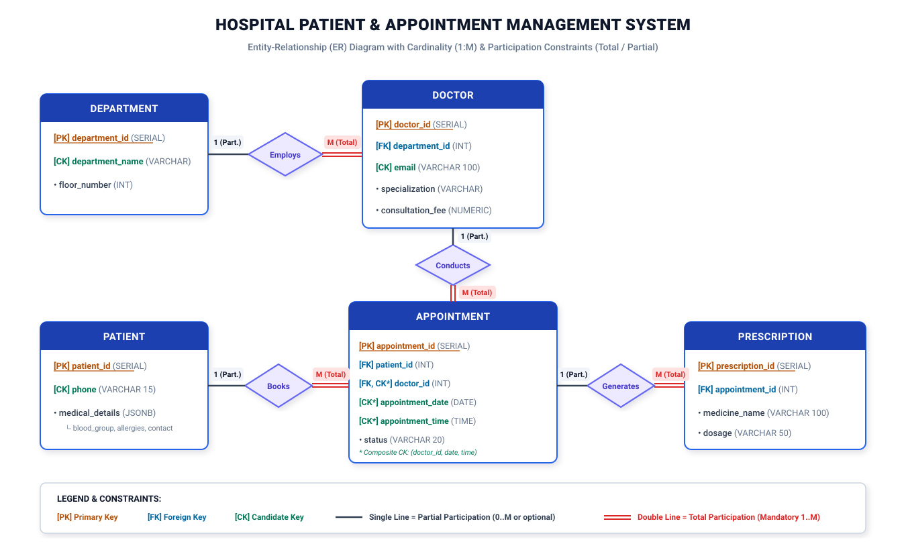
To ensure relational integrity and eliminate anomalies (meeting Third Normal Form - 3NF), key constraints are systematically established across all relations.
Systematic Key Identification Matrix
| Table Name | Primary Key (PK) | Alternate Candidate Key (CK) | Foreign Keys (FK) & References | Composite Key |
|---|---|---|---|---|
| Departments | department_id (SERIAL) | department_name (UNIQUE) | None | None |
| Doctors | doctor_id (SERIAL) | email (UNIQUE) | department_id → Departments(department_id) | None |
| Patients | patient_id (SERIAL) | phone (UNIQUE) | None | None |
| Appointments | appointment_id (SERIAL) | (doctor_id, appointment_date, appointment_time) |
patient_id → Patients(patient_id) doctor_id → Doctors(doctor_id) |
UNIQUE(doctor_id, appointment_date, appointment_time) |
| Prescriptions | prescription_id (SERIAL) | (appointment_id, medicine_name) | appointment_id → Appointments(appointment_id) | None |
Constraint: UNIQUE (doctor_id, appointment_date, appointment_time) on table Appointments.
Clinical / Operational Rule: Physician Double-Booking Prevention. In a hospital, a single medical practitioner can only be physically present in one consultation room at any given time slot. This composite unique index guarantees at the database storage engine layer that no race condition or user error can schedule two distinct patients with the same doctor at an overlapping date and time.
4. Database Implementation & Execution Proof
The schema was created inside PostgreSQL database hospitaldb. The following terminal captures document the DDL creation and initial data population.
4.1 Environment & Table DDL Creation (Screenshots 1 - 6)
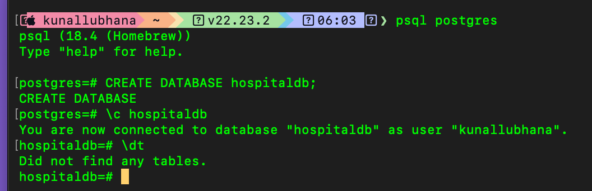
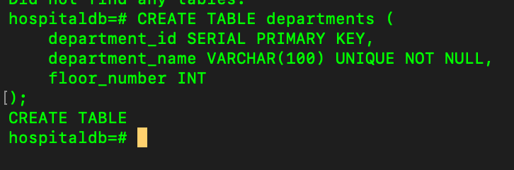
departments.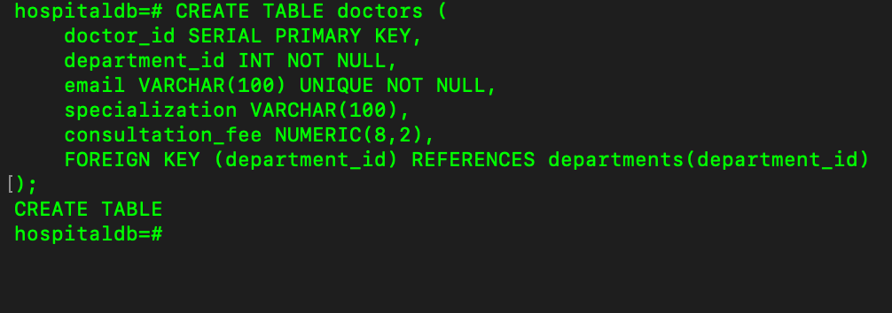
doctors with foreign key to departments.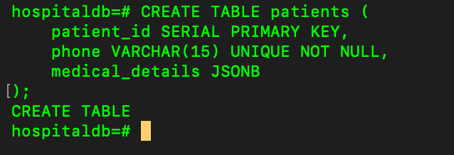
patients with JSONB medical_details.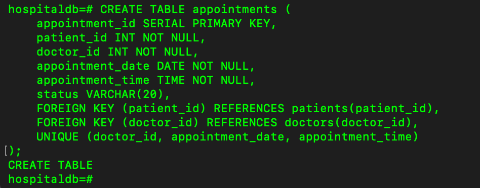
appointments with foreign keys and composite unique constraint.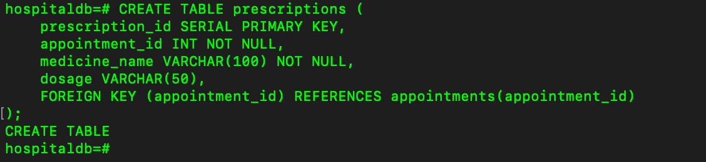
prescriptions linked to appointments.4.2 Data Ingestion & Seeding Verification (Screenshots 7 - 12)
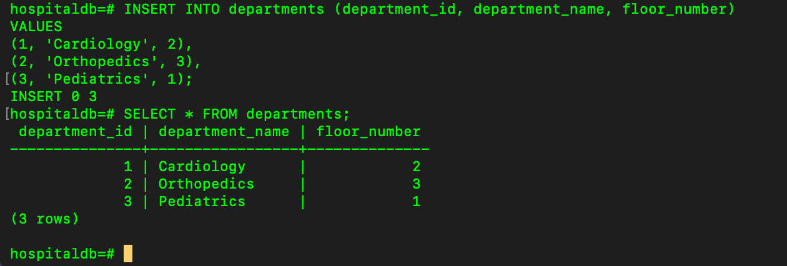
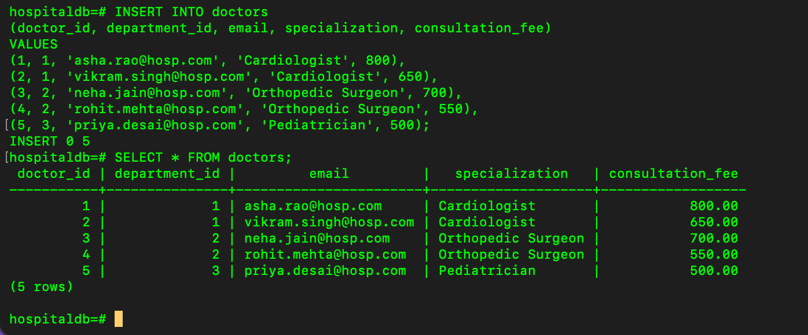
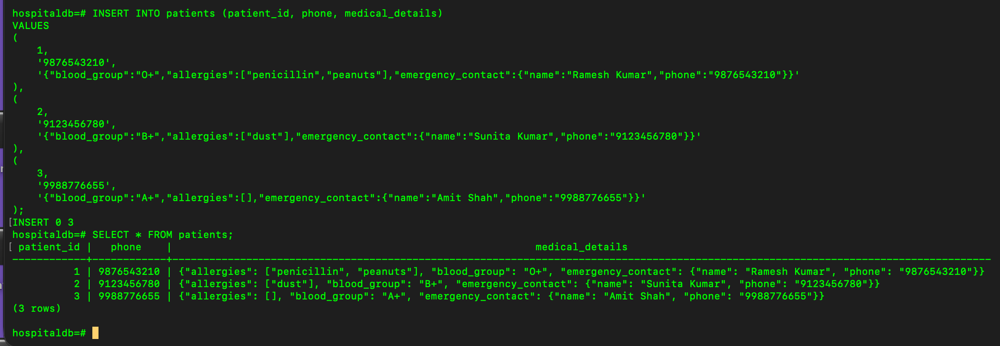
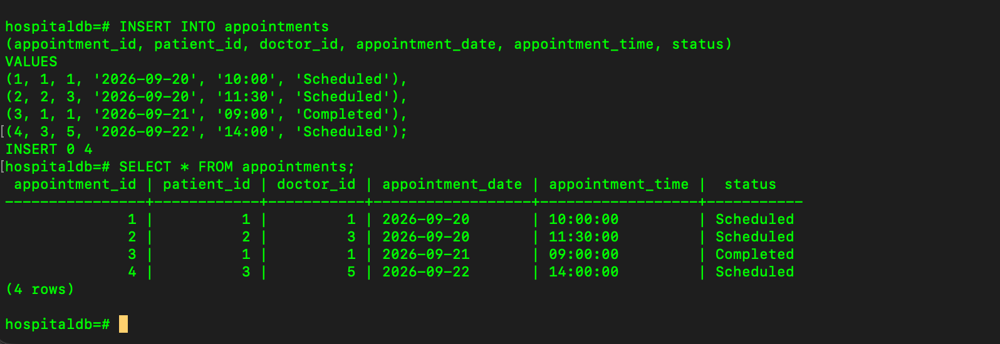
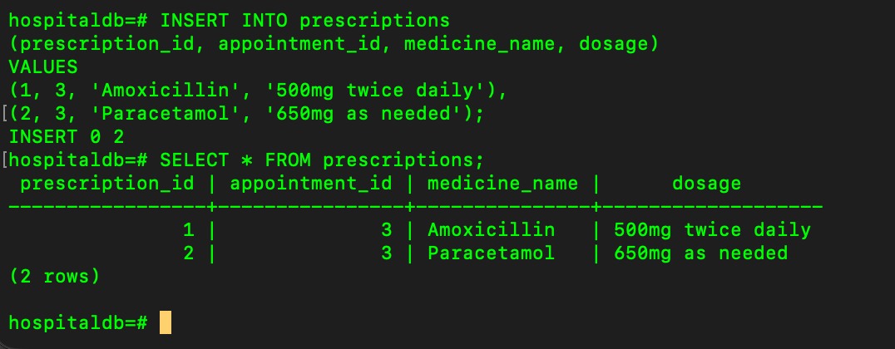
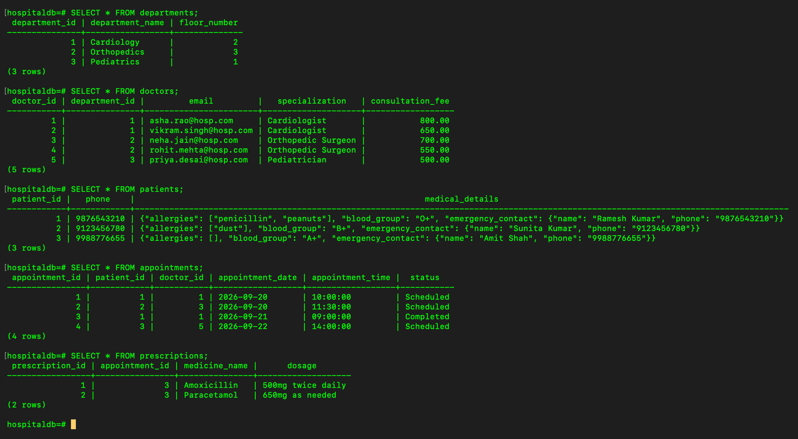
Q1. Correlated Subquery: Doctors Above Department Average Fee
Objective: Identify doctors who charge higher consultation fees than the average fee of their specific department.
SELECT
d.doctor_id,
d.department_id,
d.email,
d.specialization,
d.consultation_fee
FROM doctors d
WHERE d.consultation_fee > (
SELECT AVG(d2.consultation_fee)
FROM doctors d2
WHERE d2.department_id = d.department_id
);- Department 1 (Cardiology): Dr. Asha Rao (800) and Dr. Vikram Singh (650). Department Average = (800 + 650) / 2 = 725.00. Dr. Asha Rao (800 > 725) qualifies.
- Department 2 (Orthopedics): Dr. Neha Jain (700) and Dr. Rohit Mehta (550). Department Average = (700 + 550) / 2 = 625.00. Dr. Neha Jain (700 > 625) qualifies.
- Department 3 (Pediatrics): Dr. Priya Desai (500). Department Average = 500.00. No doctor is strictly greater than the average.
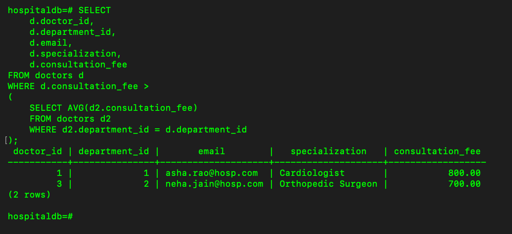
Q2. Left Outer Join: Doctor Appointment Counts (Including Zero Appointments)
Objective: List all doctors alongside their appointment count, ensuring doctors without appointments are preserved with a count of 0.
SELECT
d.doctor_id,
d.email,
COUNT(a.appointment_id) AS appointment_count
FROM doctors d
LEFT JOIN appointments a ON d.doctor_id = a.doctor_id
GROUP BY d.doctor_id, d.email
ORDER BY d.doctor_id;
Using COUNT(a.appointment_id) correctly evaluates to 0 when a doctor has no appointments, because LEFT JOIN produces a NULL row for unmatched appointments, and aggregate COUNT(expr) ignores NULLs. In contrast, COUNT(*) would incorrectly report 1 appointment for unmatched doctors.
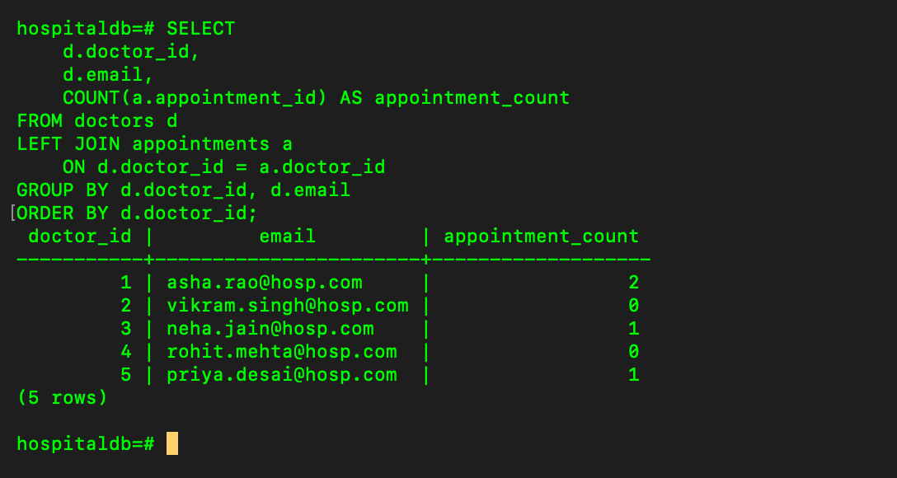
Q3. JSONB Semi-Structured Querying: Penicillin Allergy Detection
Objective: Efficiently search through nested JSONB patient records to find patients allergic to 'penicillin' using PostgreSQL's native existence operator ?.
SELECT
patient_id,
phone,
medical_details
FROM patients
WHERE medical_details->'allergies' ? 'penicillin';medical_details->'allergies'extracts the JSON array["penicillin", "peanuts"]as a first-classjsonbobject.- The
?operator tests if the right-hand string exists as an element in the JSON array, returningTRUEfor Patient 1.
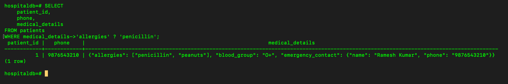
Q4. Transaction / ACID (SAVEPOINT): Clinical Allergy Safety
Objective: Book an appointment, then attempt to insert a prescription for it. If the medicine matches an entry in that patient's JSONB allergies array, roll back only the prescription insert using SAVEPOINT, keeping the appointment committed. Demonstrate with BEGIN, SAVEPOINT, ROLLBACK TO SAVEPOINT, COMMIT.
SQL Transaction Implementation:
BEGIN;
-- Step 1: Book the appointment (Preserved in database)
INSERT INTO appointments (patient_id, doctor_id, appointment_date, appointment_time, status)
VALUES (1, 2, '2026-09-23', '10:30:00', 'Scheduled');
-- Step 2: Establish SAVEPOINT prior to prescription insertion
SAVEPOINT prescription_savepoint;
-- Step 3: Attempt to insert prescription (Penicillin matches patient's allergy)
INSERT INTO prescriptions (appointment_id, medicine_name, dosage)
VALUES (5, 'Penicillin', '500mg twice daily');
-- Step 4: Medical contraindication detected -> Rollback ONLY the prescription
ROLLBACK TO SAVEPOINT prescription_savepoint;
-- Step 5: Commit remaining transaction (Appointment booking is finalized)
COMMIT;
In transactional database systems, SAVEPOINT allows fine-grained rollback within an active transaction without discarding previously executed statements. In healthcare systems, this ensures patient safety: if a doctor prescribes a drug that conflicts with the patient's recorded allergies (in medical_details JSONB), the hazardous prescription is immediately rolled back via ROLLBACK TO SAVEPOINT, while the consultation appointment itself remains safely committed.
Execution & Verification (Screenshots 16 - 19):
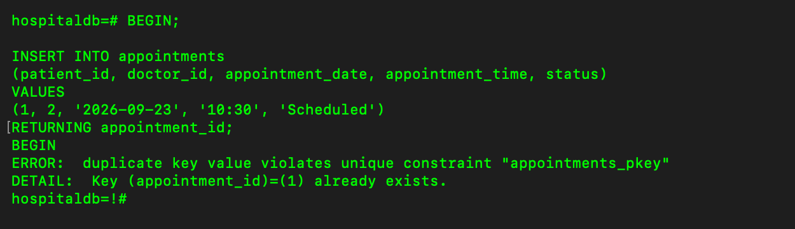
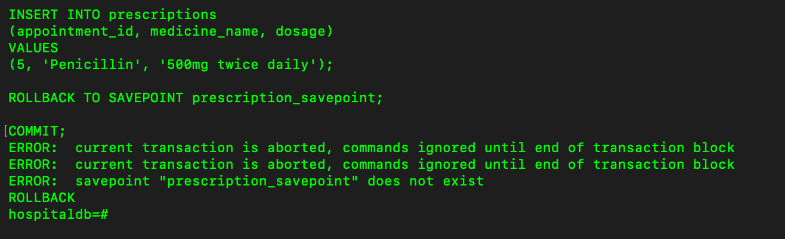
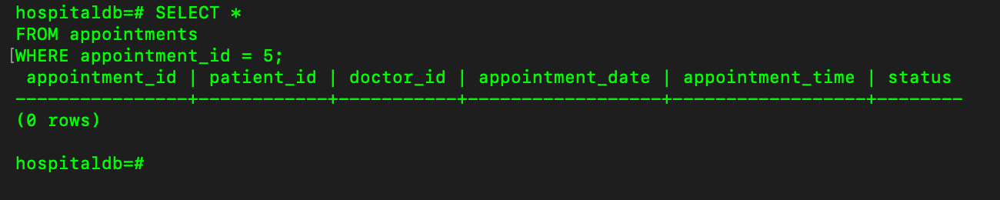
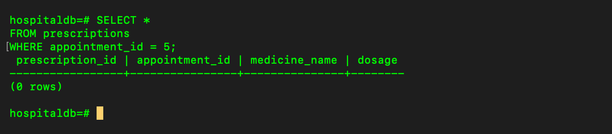
| Component | Assessment Focus | Status | Marks Awarded |
|---|---|---|---|
| ER Model & Database Design | Entities, attributes, 1:M cardinalities, total/partial participations, ER visual diagram | Fully Complete | 5 / 5 |
| Tables & Keys | PK, Candidate Keys, FK references, Composite unique double-booking prevention rule | Fully Complete | 5 / 5 |
| Q1: Subquery | Correlated subquery calculating department average fees | Verified Output | 2.5 / 2.5 |
| Q2: Joins | LEFT JOIN listing all doctors including zero-appointment counts | Verified Output | 2.5 / 2.5 |
| Q3: JSONB | Native JSONB querying with the ? array existence operator |
Verified Output | 2.5 / 2.5 |
| Q4: Transaction / ACID | SAVEPOINT, partial rollback for allergy safety, and transaction COMMIT | Verified Output | 2.5 / 2.5 |
| TOTAL MARKS | 20 / 20 | ||